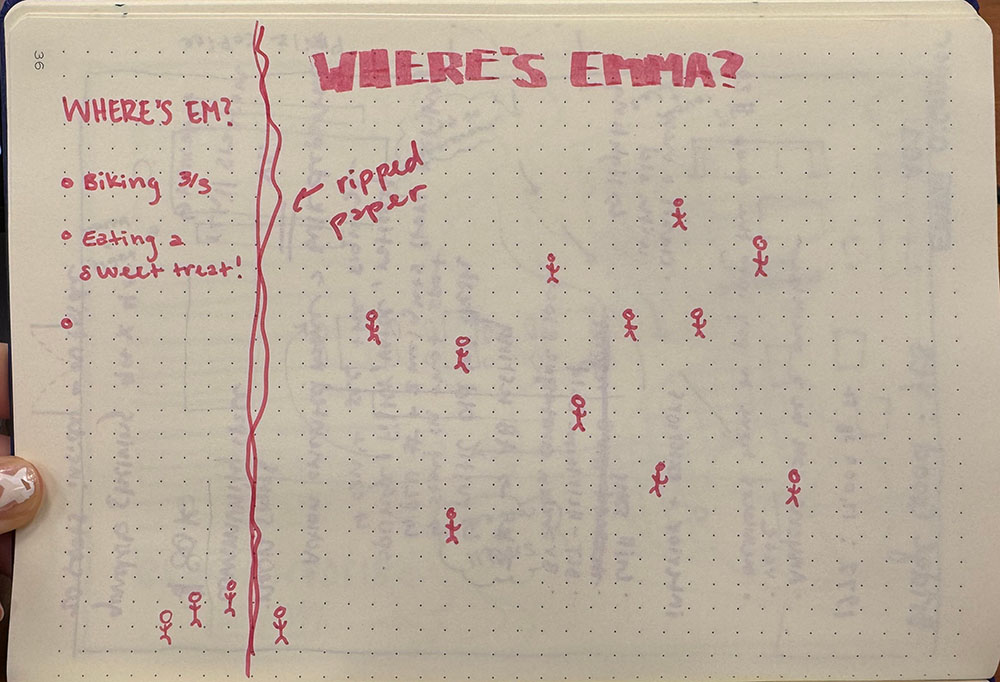
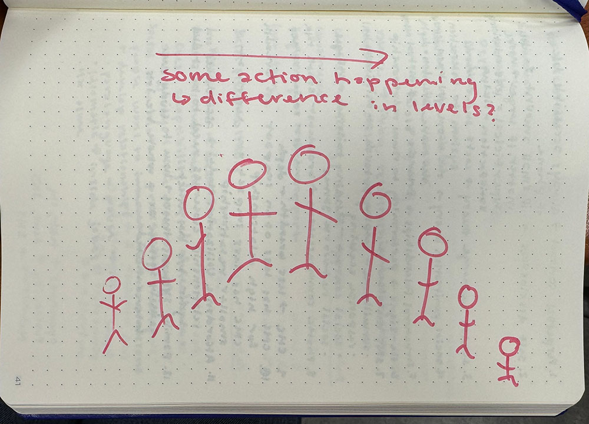
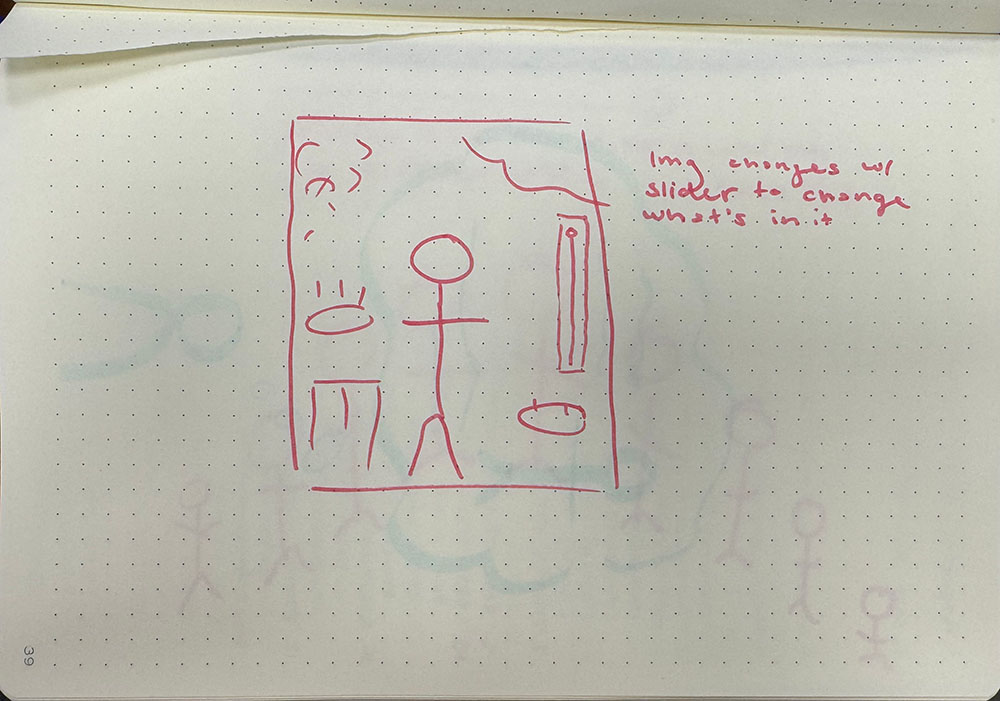

Every Picture Experiments
My every picture project is going to be an eye spy design, but I didn’t know what the eye spy image would be and what it would mean to me. For my experiment, I spent time looking at photos I had and coming up with potential compositions. I went through a couple different iterations of what I want the image to look like, but I’m still figuring out what would be best.
  